朝のニュースまとめ
2026年10月31日（土）
🇯🇵 日本の主要ニュース
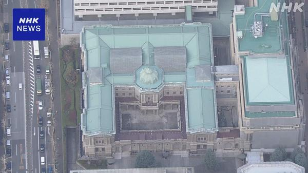
日銀、物価2％到達と判断 今後は「定着」に軸足日銀は基調的な物価上昇率が目標の2％に達したと初めて判断し、今後はこの水準で定着させることに政策運営の軸足を移します。利上げをどう進めるかが焦点です。
出典：NHK
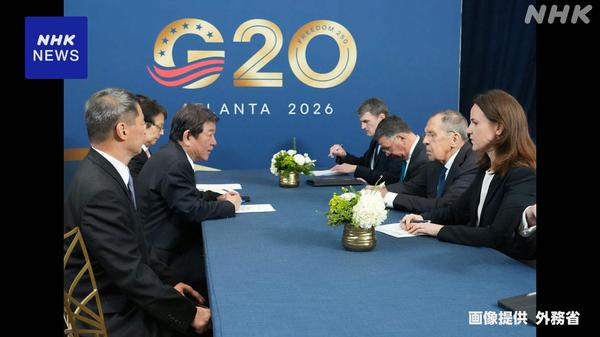
5年ぶりの日ロ外相会談、茂木外相が北海道新聞記者の即時解放を要請茂木外相は訪問先のアメリカでロシアのラブロフ外相と会談しました。日ロ外相の正式な対面会談はおよそ5年ぶりで、拘束されている北海道新聞記者の即時解放を求めました。
出典：NHK
無印良品のアプリから最大2726万件の個人情報流出のおそれ
良品計画は「MUJIアプリ」への不正アクセスで、退会済みの人も含め最大約2726万件の個人情報が流出したおそれがあると発表しました。松屋（約238万件）など被害の発表が相次いでいます。
出典：NHK
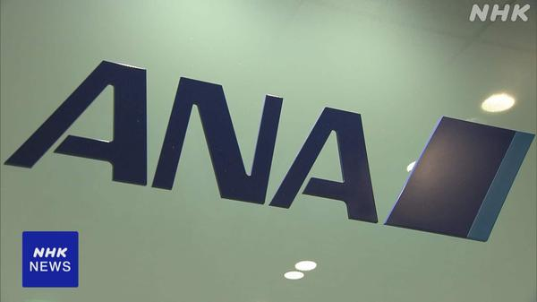
全日空、3万7000人超の情報漏えいか 一部はパスポート番号も全日空は予約・発券システムへの不正アクセスで、乗客3万7000人あまりの氏名や予約情報が漏えいしたおそれがあると発表しました。一部はパスポート番号も含まれます。
出典：NHK
都立六本木高校で生徒が刺され、同級生を殺人未遂疑いで逮捕
東京・港区の都立六本木高校で1年の女子生徒が包丁で脇腹などを刺されて搬送されました。警視庁は同じ学年の女子生徒を殺人未遂の疑いで逮捕しました。
出典：NHK
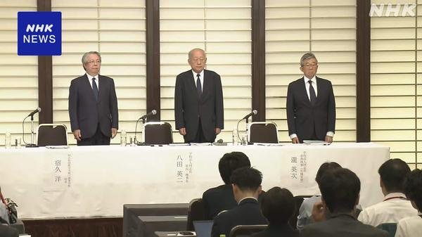
辺野古沖転覆事故、同志社が7か月半ぶり会見 遺族「説明責任を真剣に」研修旅行中の船の転覆で女子生徒が亡くなった事故で、同志社国際高校を運営する学校法人が会見を開きました。遺族は説明責任を真剣に考えてほしいと訴えています。
出典：NHK
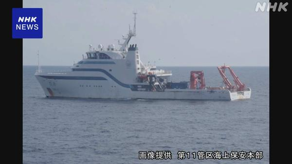
中国の海洋調査船、波照間島沖の日本のEEZ内で活動沖縄県竹富町の波照間島沖の日本のEEZ内で、中国の海洋調査船が調査とみられる活動をしているのが確認され、海上保安庁が中止を求めました。
出典：NHK
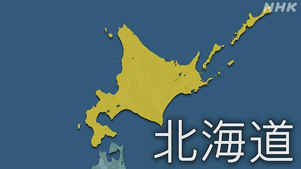
北海道で特急列車がクマと衝突、運転再開のめど立たず稚内駅へ向かう特急列車が30日夜遅くクマと衝突しました。列車の下にクマを巻き込んでいる可能性があり、現場に停止したまま運転再開のめどが立っていません。
出典：NHK
🌍 世界の主要ニュース
バイナンスに過去最大級のハッキング、被害は約63億ドル 北朝鮮関与の見方
暗号資産取引所最大手バイナンスが約63億ドル（約1兆円）の被害を受け、分析会社は北朝鮮のハッカー集団の犯行とみています。同社はFBIなどと連携して資金の回収を進めています。
出典：BBC／NHK
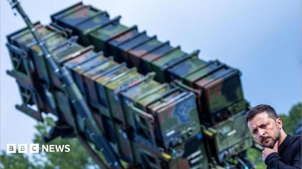
米国、ウクライナへのパトリオットミサイル500発の売却を承認米政府は、ロシアの弾道ミサイルを迎撃できる唯一の有効な兵器とされるパトリオットミサイル500発のウクライナへの売却を承認しました。
出典：BBC
G20外相会合の記念撮影が中止、ロシア外相の参加に欧州が反発
米国で開かれたG20外相会合で、欧州の外交官がロシアのラブロフ外相との撮影に反対し、恒例の記念撮影が取りやめになりました。
出典：AP／BBC
 NY市場が6月以来の大幅安、ナスダック一時3.85％下落 AI投資に懸念
NY市場が6月以来の大幅安、ナスダック一時3.85％下落 AI投資に懸念AI・半導体関連株を中心に売りが広がり、ナスダック総合指数は一時3.85％下落しました。インテルは約3割安となっています。
出典：NHK／AP
イスラエル総選挙、ネタニヤフ陣営が過半数割れ 難しい連立交渉へ
総選挙の結果、ネタニヤフ首相の陣営は議会の過半数を失い、今後は難しい連立交渉が予想されます。首相の党は「選挙が盗まれた」と主張しています。
出典：AP
カナダのEU「準加盟国」構想、首脳会合で協議推進を確認
EUとカナダの首脳会合で、カナダがEUの「準加盟国」となる構想の協議を進めることを確認しました。カーニー首相は来年6月の合意を目指しています。
出典：NHK／AP
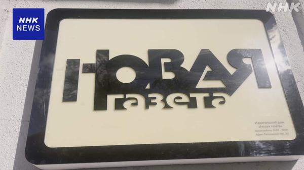
ロシア独立系紙「ノーバヤ・ガゼータ」が編集部閉鎖へ30年余り活動してきたロシアの独立系新聞が11月に編集部を閉鎖すると発表しました。ノーベル委員会は「深く憂慮」するとしています。
出典：NHK／BBC
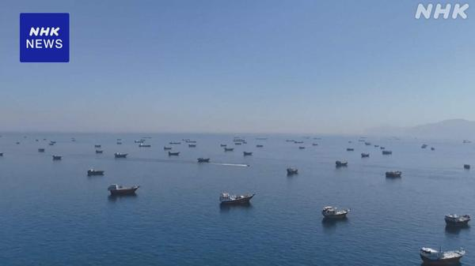
米のイラン攻撃回避へ仲介外交、ホルムズ海峡ではタンカー炎上カタールの外交団がイランを訪れ、米国による攻撃再開の回避に向けた外交が活発化しています。一方でホルムズ海峡ではタンカーが炎上しました。
出典：NHK
🤖 AIニュース
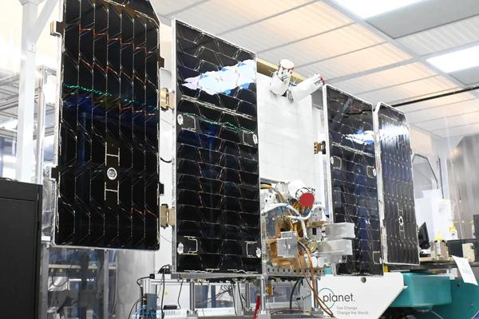
Googleの宇宙データセンター衛星が稼働、初の応答を地上に送信Googleが打ち上げたTPU搭載の衛星で、DeepMindのGemma 4モデルが動き始め、最初の応答（詩）を地上に送りました。宇宙でAIを動かす初の事例とされます。
出典：TechCrunch／The Verge
OpenAI・Google・MS・Anthropic、AI学習用スクレイピングを拒否できる新標準を採用へ
大手AI4社が、Webサイト運営者がAIの学習目的の収集を拒否できる新しい仕組みに対応すると表明しました。
出典：The Verge
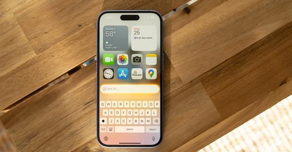
Apple Intelligence、iOS 27.3でついに中国に上陸Appleは、これまで提供できていなかった中国でもiOS 27.3からApple Intelligenceを提供すると明らかにしました。
出典：The Verge
キオクシア中間決算、純利益2.2兆円で過去最高 初の配当へ
AI向けメモリー需要の急増で、キオクシアHDの中間決算は純利益2.2兆円と過去最高に。第2四半期だけで前年の通期売上を上回り、初の配当も実施します。
出典：ITmedia AI＋
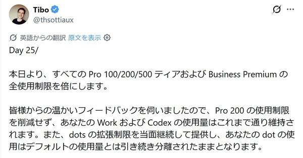
ChatGPT Proの利用上限が2倍に、Pro 200の「半減」は撤回OpenAIは全てのProとBusiness Premiumプランの利用上限を倍にすると発表しました。批判を受けていたPro 200プランの上限半減は撤回されました。
出典：ITmedia AI＋
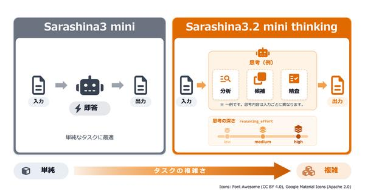
ソフトバンク系の国産LLM「Sarashina」に初の思考モデルSB Intuitionsは思考モデル「Sarashina3.2 mini thinking」を発表しました。ツール呼び出しやWeb検索の性能が向上し、APIで提供されます。
出典：ITmedia AI＋
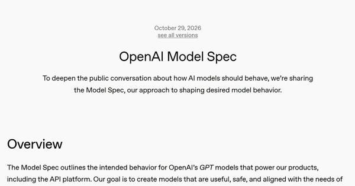
OpenAI、AIの行動指針「Model Spec」を改定記憶（メモリー）や会話履歴の扱い、人間による監督などを明記し、全体を5つの価値観に沿って整理し直しました。
出典：ITmedia NEWS
AI投資ブームにひび？ 巨額の借り入れに懸念
ビッグテックがAIインフラに巨額を投じる一方、膨らむ負債や収益化への疑問から、AI投資ブームの持続性を懸念する声が強まっています。
出典：TechCrunch
アルトマン氏「RAMは手元よりデータセンターにあるほうがいい」
メモリー不足について問われたOpenAIのサム・アルトマンCEOは、RAMはデスクのPCよりデータセンターで使われるほうが良いと発言し、議論を呼んでいます。
出典：The Verge
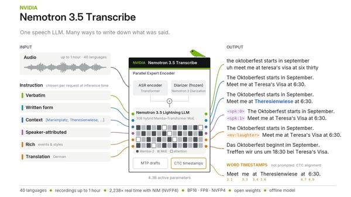
NVIDIA、40言語対応の無償文字起こしAI「Nemotron 3.5 Transcribe」文字起こし、翻訳、話者分離に対応したオープンウェイトのモデルを公開しました。
出典：PC Watch
💻 PC・ガジェットニュース
インテル株が29％急落、PC向け不振で約50年ぶりの下落率
メモリー価格高騰でPC販売が落ち込み、インテルの見通しが市場予想を下回りました。株価は約50年ぶりの下落率となり、米政府の保有株の価値も約120億ドル目減りしました。
出典：日本経済新聞／TechCrunch
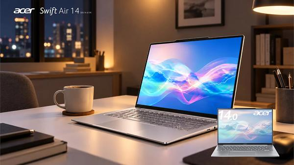
約960gの14型「Acer Swift Air 14」にRyzen AI搭載モデル日本エイサーは、Copilot+ PCに対応した軽量14型ノートにRyzen AI搭載の4機種を追加しました。
出典：PC Watch
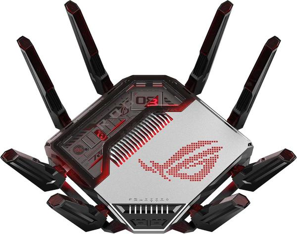
ASUS、Wi-Fi 8ドラフト対応のゲーミングルーター「ROG Rapture GT-BN98」8本の外部アンテナを備えた、次世代規格Wi-Fi 8のドラフト版に対応する高機能ルーターです。
出典：ITmedia PC USER
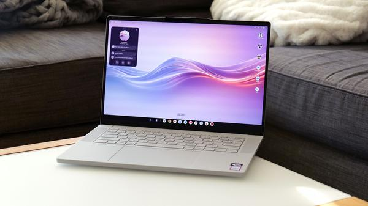
Lenovo Googlebook 15レビュー、Androidスマホとの連携が光るGoogleの新しいノートPC向けOSを載せたLenovo機のレビュー。ハードは優秀ですが、OSはまだ発展途上と評価しています。
出典：Engadget
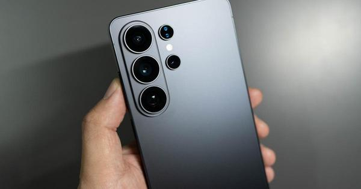
Galaxy S27シリーズはバッテリー増量か、Ultraは5000mAh台後半との予測2027年初頭の発表が見込まれるSamsungの次期フラッグシップは、バッテリー容量が増える見通しと報じられています。
出典：ギズモード・ジャパン
Razerの「光るネコ耳」ヘッドセットに第3世代、USB Type-C対応
「Kraken Kitty V3」はシリーズ最軽量の315gで、USB Type-C接続に対応しました。
出典：ギズモード・ジャパン
🔥 Xのトレンド（日本）
ジャンルで絞らず上位20件を掲載。「未確認」はX上の投稿だけを根拠にしたもので、報道機関による裏付けはありません。
土曜朝の岩本照さんのラジオ番組。リスナーの悩み相談やゴスペラーズ「UNItVERSE」、Snow Man「ALL SUITE」の選曲、最後のエコーのかかった「終わっちゃいました」が話題です。
⚠ 未確認（X情報のみ）
日本マクドナルド公式のキャンペーン。対象の投稿にこのハッシュタグを付けて10月31日中にリプライすると、抽選で1000円分のマックカードが当たるため、リプライが殺到しています。
⚠ 未確認（X情報のみ）
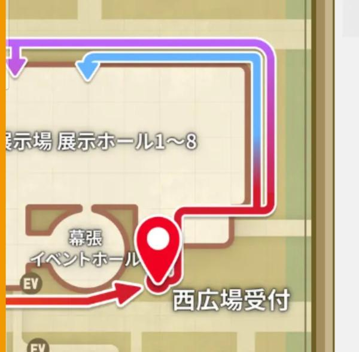
9. ファンフェス
『ファイナルファンタジーXIV』のファンイベント「ファンフェスティバル」が幕張メッセで開幕。会場に向かうファンの投稿や、きょう午前の基調講演への期待が集まっています。
⚠ 未確認（X情報のみ）
Grok Bot がまとめました。